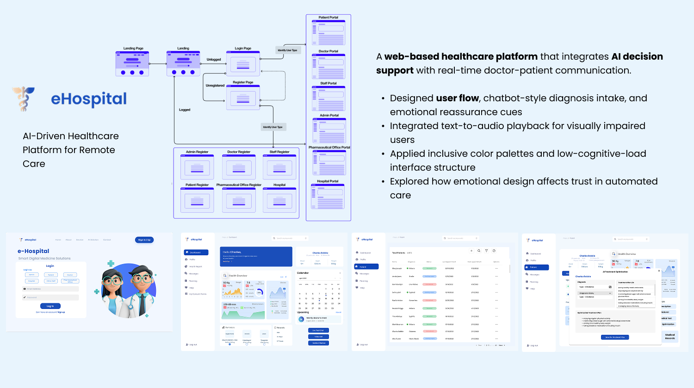
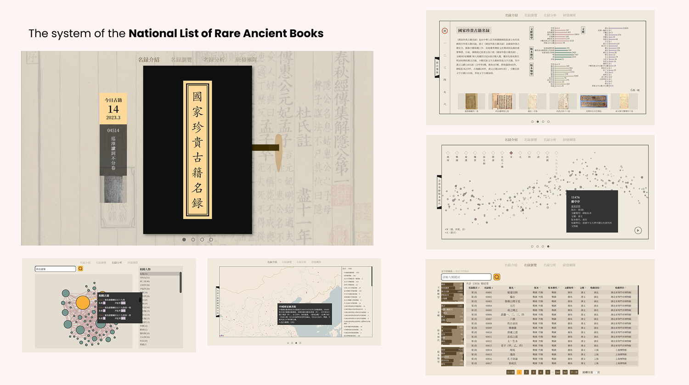
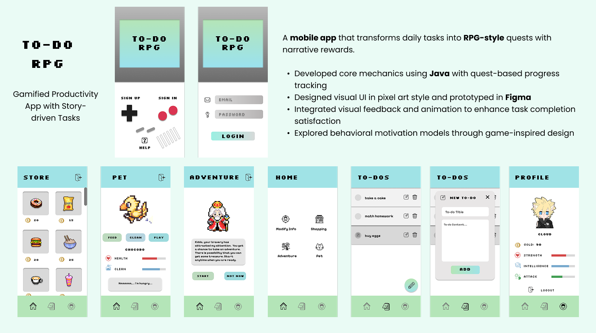

UX/UI designer exploring the intersection of audio, emotion, and interaction. Focused on inclusive, research-driven experiences that merge profound clarity with delicate emotion.

Accessible healthcare platform prioritizing human-centric navigation. Achieved a +27% task completion rate through rigorous inclusive restructuring.
Explore Archive
Digital humanities platform archiving 13,026 historical volumes. Bridging the gap between ancient heritage and modern digital accessibility.
Explore Archive
A gamified prototype transforming mundane daily tasks into engaging behavioral loops through psychological UI mechanisms.
Concept OnlyCurrently open to collaborative opportunities and conceptual discussions. Let's shape the digital space.